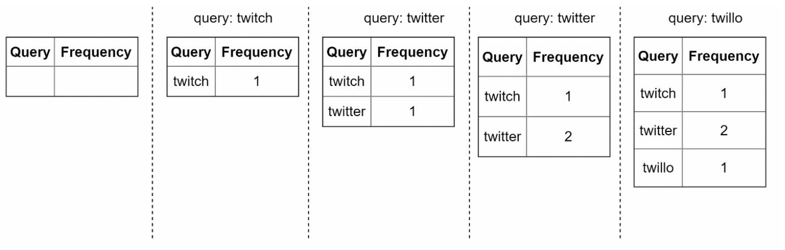
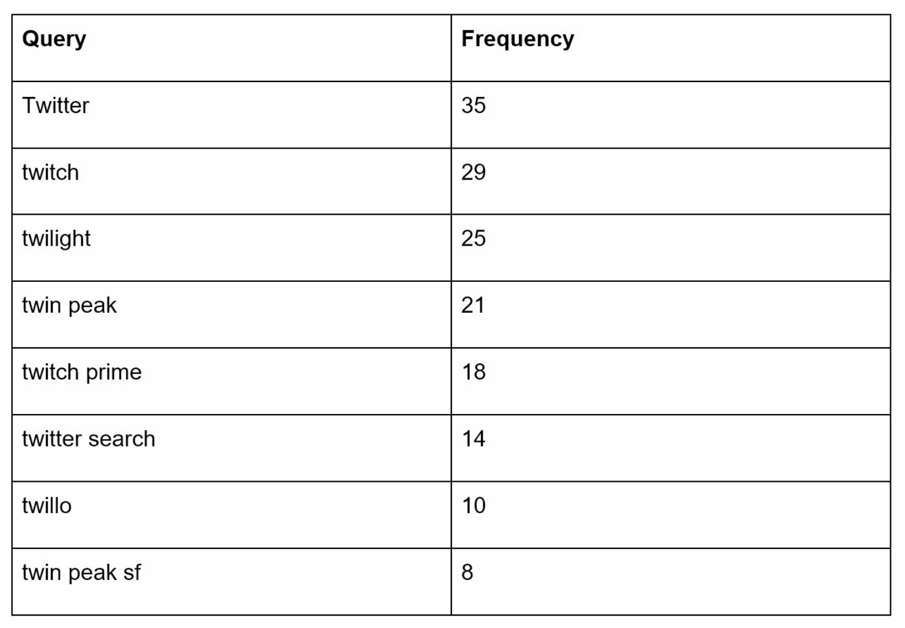
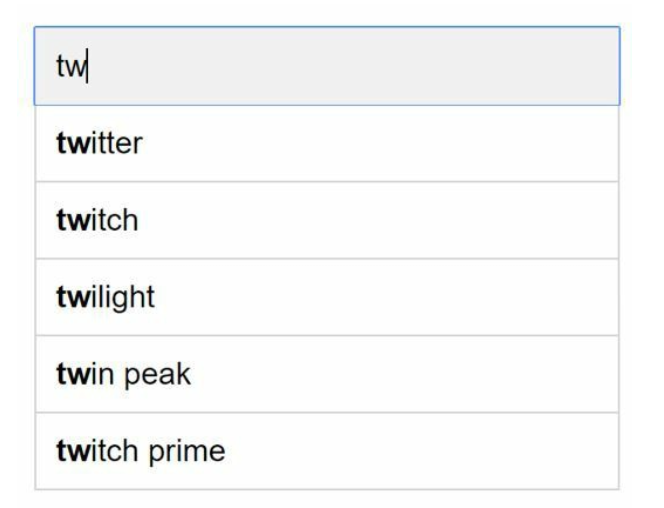
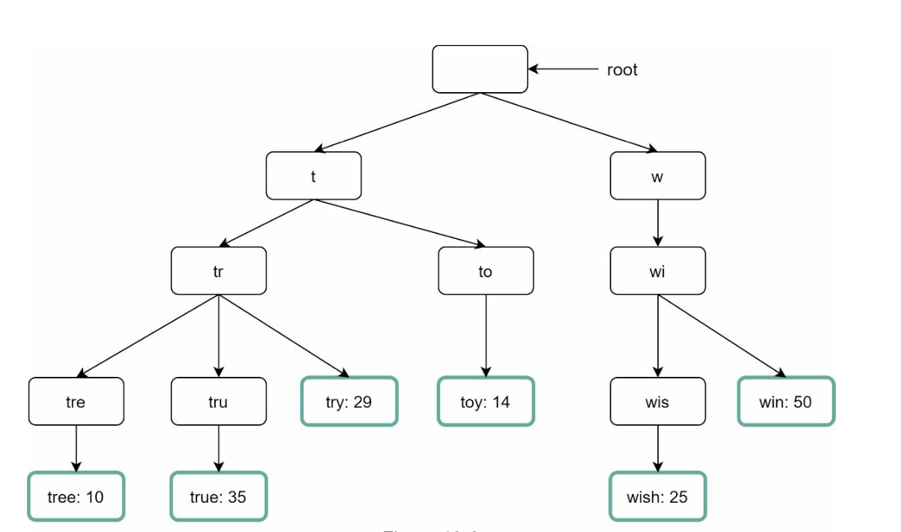
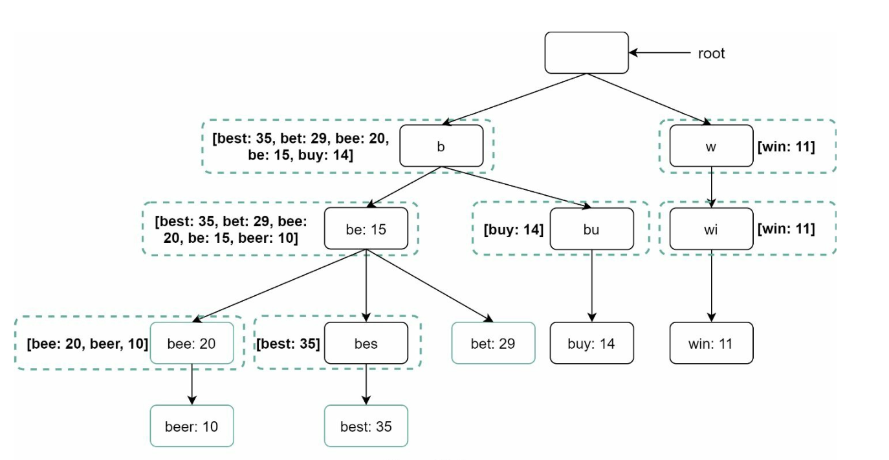
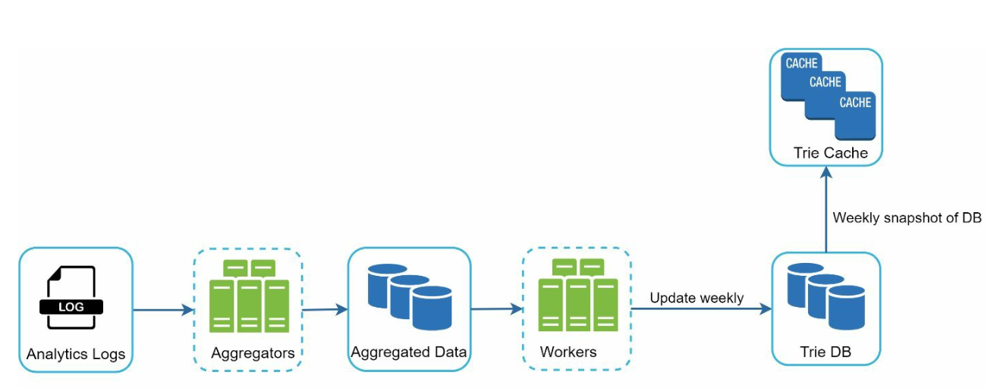
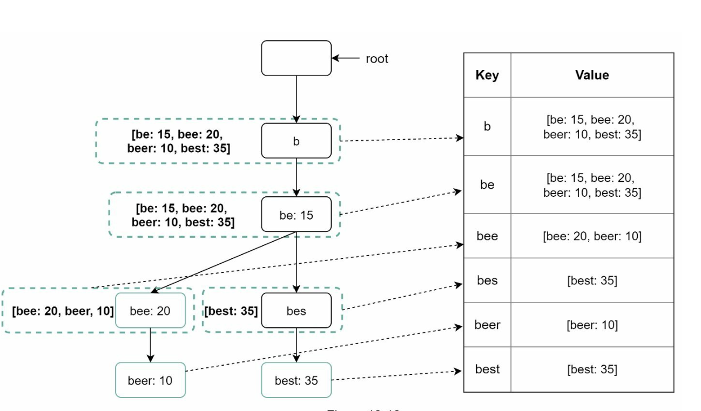
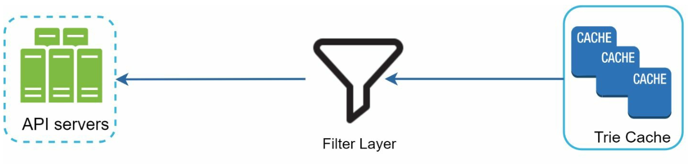
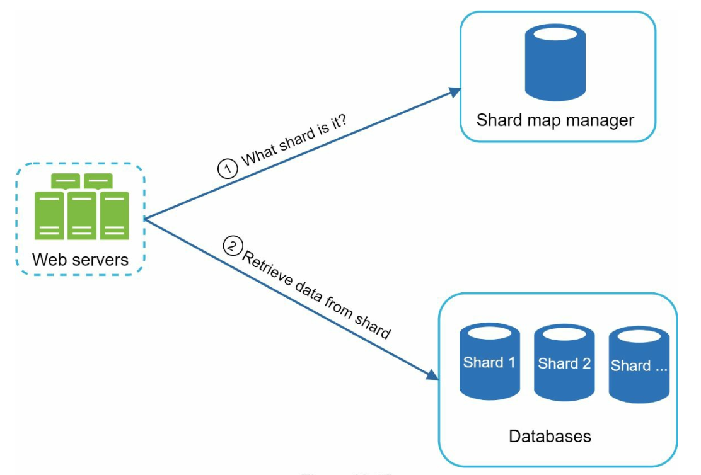

Design Search Autocomplete
Google search box mein "tw" type karte hi top-5 suggestions — 100 ms se kam mein. Trie, har node pe cached top-k, weekly data pipeline aur prefix sharding se ye kaise banta hai, step by step.
Introduction
Autocomplete ko typeahead, search-as-you-type ya incremental search bhi kehte hain. User jaise-jaise type karta hai, system historical query data ke basis pe top-k popular suggestions dikhata hai. Simple lagta hai, lekin har keystroke ek request hai — isliye ye ek extreme low-latency, read-heavy system hai.
- Max 5 suggestions.
- Ranking query popularity (frequency) se.
- Sirf lowercase English characters (spell-check, special chars out of scope).
- Response <100 ms — warna typing ke saath suggestions "stutter" karenge.
Step 1: Requirements aur estimation
- Fast response: <100 ms.
- Relevant: prefix se match karein.
- Sorted: popularity ke hisaab se.
- Scalable aur highly available.
Numbers kahan se aate hain
Notes mein final numbers hain: 10M DAU, peak 48,000 QPS, aur 0.4 GB/day naya storage. Ye aise derive hote hain (book ki standard assumptions):
- Har user roz ~10 searches karta hai; har query ~20 bytes (avg ~4 words × ~5 chars).
- Har character type karne pe ek request → ek search ≈ 20 requests.
- QPS = 10M × 10 × 20 / 86,400 ≈ ~24,000. Peak ≈ 2× ≈ ~48,000.
- Maan lo 20% queries naye hain: 10M × 10 × 20 bytes × 20% ≈ 0.4 GB/day.
Step 2: High-level design
System do services mein bata hai:
- Data gathering service: user queries collect karke frequency aggregate karta hai.
- Query service: prefix diya, top-5 queries lautata hai.
Data gathering service (naive, real-time version)

Ye starting point ke liye theek hai, lekin billions of queries pe real-time update practical nahi — aage fix karenge.
Query service


Naive SQL approach:
SELECT * FROM frequency_table
WHERE query LIKE 'tw%'
ORDER BY frequency DESC
LIMIT 5;Chhote data pe chal jaata hai, lekin data bada hote hi LIKE + ORDER BY har keystroke pe database bottleneck ban jaata hai. Isliye trie.
Step 3: Design deep dive
Trie data structure
Trie (prefix tree, "retrieval" se naam) strings ko compactly store karta hai:
- Root empty string hai.
- Har node ek character/prefix store karta hai; har node ke max 26 children (a–z).
- Har tree node ek word ya prefix string represent karta hai.
- Popularity ke liye nodes pe frequency bhi store karte hain.

Top-k nikalne ke steps (naive)
- Prefix ka node dhoondo — O(p), p = prefix length.
- Us node se poore subtree ko traverse karke saare valid children (complete queries) lo — O(c), c = children count.
- Sort karke top k — O(c log c).
Example: "tr" → tree:10, true:35, try:29 → top-2 = true, try. Lekin worst case mein (e.g. prefix "a") poora bada subtree traverse karna padega — bahut slow.
Optimization 1: Prefix length limit
Users rarely lambi query type karte hain — max prefix length ek chhota number (jaise 50) maan lo. Tab "prefix dhoondo" O(1) ho jaata hai.
Optimization 2: Har node pe top-k cache karo

Ab dono steps O(1) ho gaye — top-k query O(1). Trade-off: zyada memory (har node pe list), lekin fast response ke liye ye worth it hai. Space = time ka classic trade.
Data gathering service (improved)
Real-time har query pe trie update kyun nahi?
- Billions of queries/day — har ek pe trie update karna system ko slow kar dega.
- Trie banne ke baad top suggestions zyada badalte nahi.

- Analytics logs: raw search queries, append-only, indexed nahi.
- Aggregators: logs ko frequency mein convert. Twitter jaise real-time use case mein chhota aggregation interval; baaki ke liye weekly kaafi.
- Aggregated data: e.g.
query, week_start_time, frequency. - Workers: async servers jo regular interval pe trie build karke Trie DB mein store karte hain.
- Trie cache: distributed cache jo trie memory mein rakhta hai, weekly DB snapshot se refresh.
- Trie DB options:
- Document store (e.g. MongoDB): weekly trie ka snapshot serialize karke store.
- Key-value store: har prefix = key, us node ka data (top-k) = value.

Query service flow + optimizations
- Search query load balancer → API servers.
- API servers Trie Cache se data lete hain aur response banate hain.
- Cache miss (cache node down / naya) → Trie DB se laake cache mein replenish.
- AJAX requests: poora page refresh nahi, lightweight async request.
- Browser caching: suggestions zyada badalte nahi, to browser cache mein rakho. Google search, for example, autocomplete responses ko browser mein ~1 ghante tak cache karne ke liye
Cache-Control: private, max-age=3600header bhejta tha (book ka example). - Data sampling: har query log karna CPU/storage heavy — 1 in N log karo.
Trie operations
- Create: workers aggregated data (analytics log/DB) se weekly banate hain.
- Update: Option 1 — weekly poora naya trie, purana replace. Option 2 — individual node update; lekin ek node update karne pe uske saare ancestors ki top-k list bhi update karni padti hai (kyunki unme bhi wo query ho sakti hai) — slow, isliye rare.
- Delete: hateful, violent, sexually explicit, dangerous suggestions hatane hain.

Filter layer ke saath unwanted entries ko database se physically async hataya jaata hai, taaki agle weekly build mein wo trie mein na aayein.
Scale the storage: sharding
Trie ek server mein fit na ho to shard karo:
- Naive: first character pe — 'a–m' ek server, 'n–z' dusra. 26 servers tak first char; aage second level (aa–ag, ah–an…).
- Problem: English mein letters even distributed nahi — 'c' se shuru hone wale words 'x' se kahin zyada. Uneven shards.
- Fix: historical data distribution ke basis pe shard karo — e.g. agar 's' ke queries 'u–z' ke combined jitne hain, to 's' ek shard aur 'u–z' ek shard.

Step 4: Wrap-up — advanced features
- Multi-language: trie nodes mein Unicode characters store karo.
- Country-specific: alag countries ke liye alag tries, CDN mein store karke response time improve.
- Trending / real-time queries (breaking news): weekly trie mein nahi aayenge. Ideas: working data set ko shard karke kam karo, ranking model mein recent queries ko zyada weight do, stream processing (Kafka, Spark Streaming, Storm jaise tools) use karo.
Interview mein kaise bolein
- (5 min) Scope: top-5, frequency ranking, lowercase English, <100ms, 10M DAU. Estimation: ~24k QPS, peak ~48k, 0.4 GB/day.
- (7 min) Two services: data gathering + query service; SQL LIKE approach aur uski limitation.
- (15 min) Trie: structure, naive top-k complexity, phir dono optimizations (prefix limit + cached top-k) → O(1).
- (10 min) Pipeline: analytics logs → aggregators → workers → Trie DB → Trie cache; KV mapping; filter layer.
- (5 min) Sharding by historical distribution + shard map manager; trending queries, multi-language.
Common follow-up questions
Q: Har keystroke pe request — server pe load kaise kam karein?
A: Client-side debounce (e.g. typing ruke tab bhejo), browser cache, aur CDN/edge caching for popular prefixes.
Q: Weekly update bahut slow hai, breaking news ka kya?
A: Streaming pipeline se chhote interval pe trending prefixes update karo, ya recent queries ko higher weight do.
Q: Trie rebuild ke time reads ka kya?
A: Naya trie alag build hota hai, ready hone pe atomically swap — reads purane pe chalte rehte hain.
Q: Har node pe top-k store karne se memory kitni badhegi?
A: Har node pe k entries — k=5 chhota hai, aur prefix length 50 tak capped; trade-off acceptable hai kyunki latency requirement strict hai.
Q: Personalized suggestions?
A: Global top-k ko user history ke saath merge karke re-rank — ye query service mein ek extra layer hai.
Q: Offensive suggestion turant hatani hai?
A: Filter layer mein rule add karo (instant), aur DB se async delete taaki agle build mein na aaye.
Key Takeaways
- Do services: data gathering (offline) aur query service (online, <100ms).
- 10M DAU × 10 searches × 20 chars → ~24k QPS, peak ~48k; 0.4 GB/day naya data.
- Trie + prefix length cap + har node pe cached top-k = O(1) lookup, memory ke badle.
- Trie ko real-time update mat karo; analytics logs → aggregators → workers → Trie DB → Trie cache (weekly).
- Trie DB: document store snapshot ya KV (prefix → top-k).
- Filter layer unwanted suggestions turant rokti hai.
- Sharding historical data distribution pe; shard map manager routing karta hai.